Enter a nickname |  |
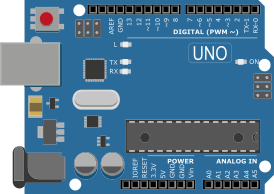

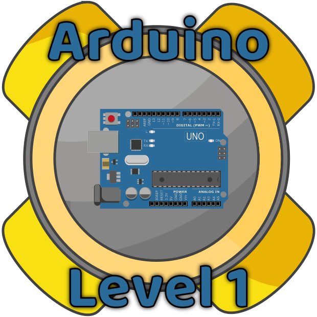
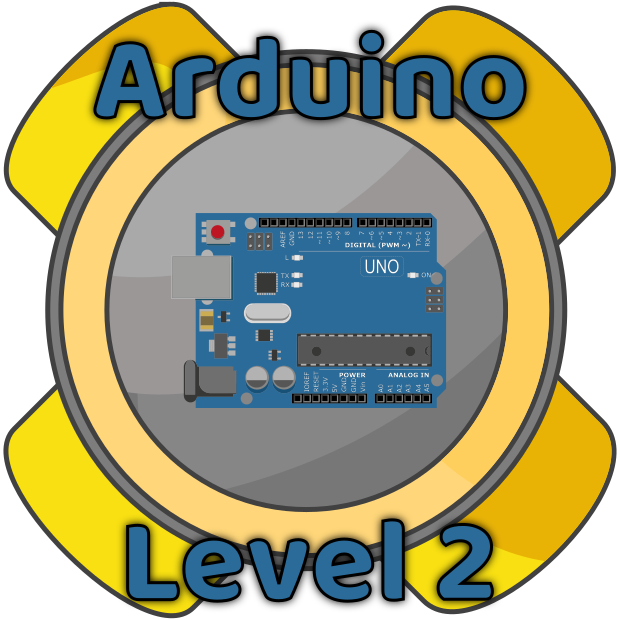
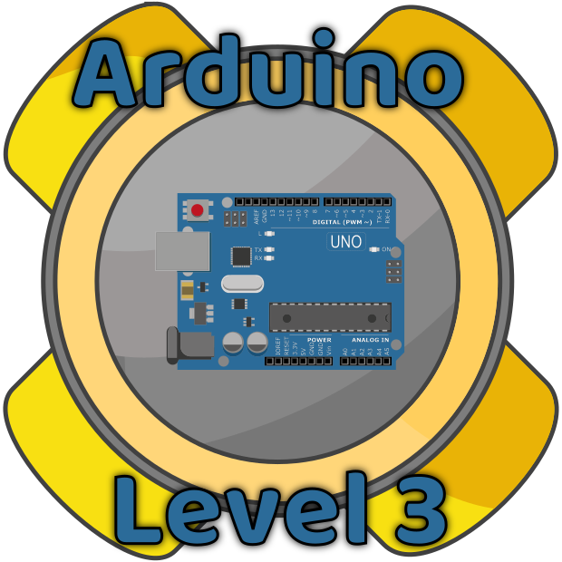
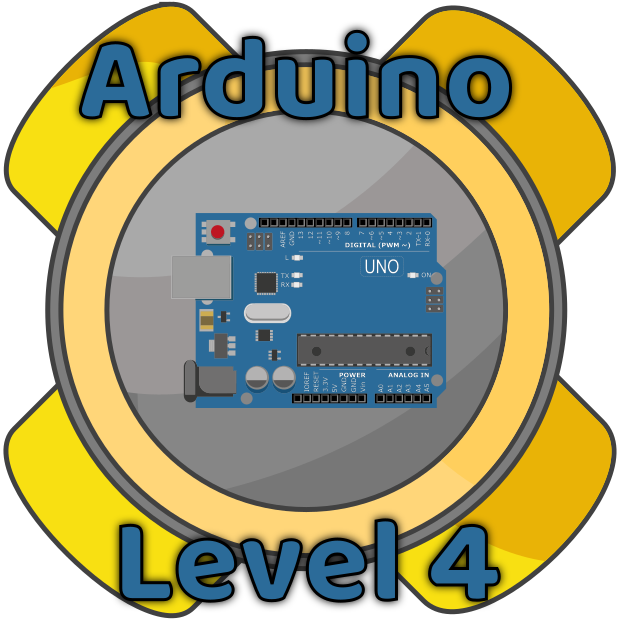
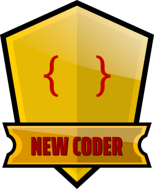
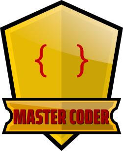
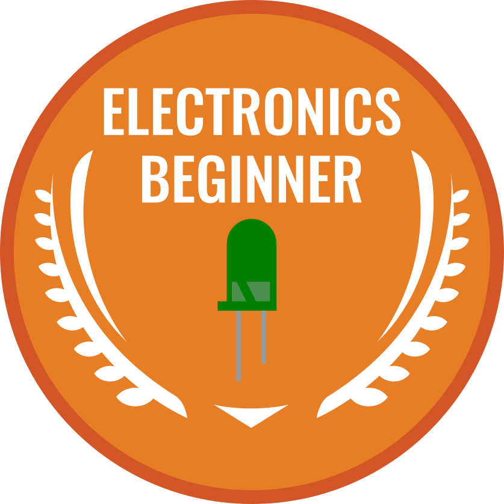
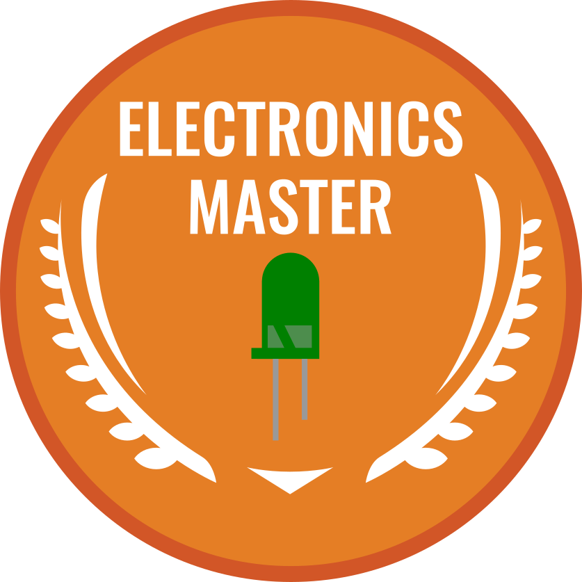
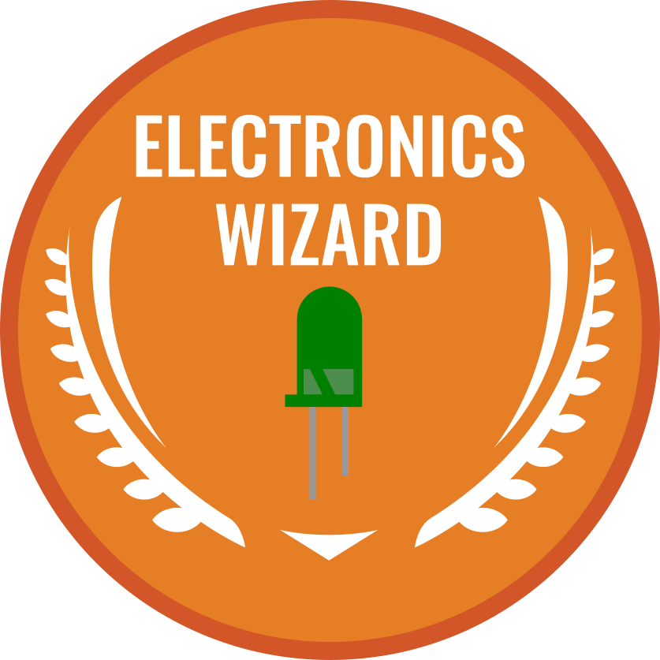
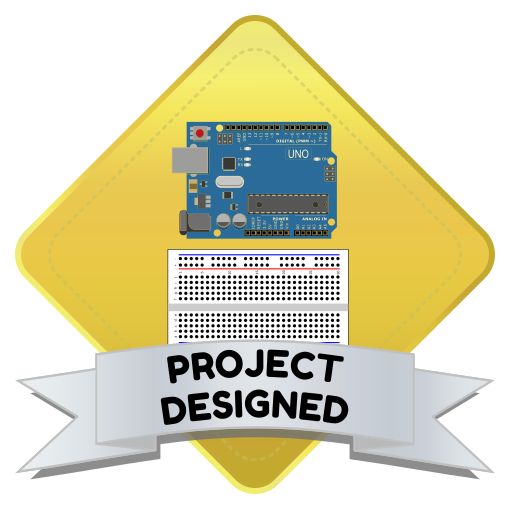
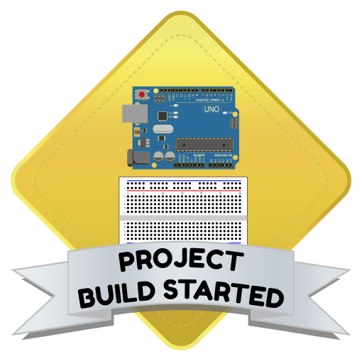
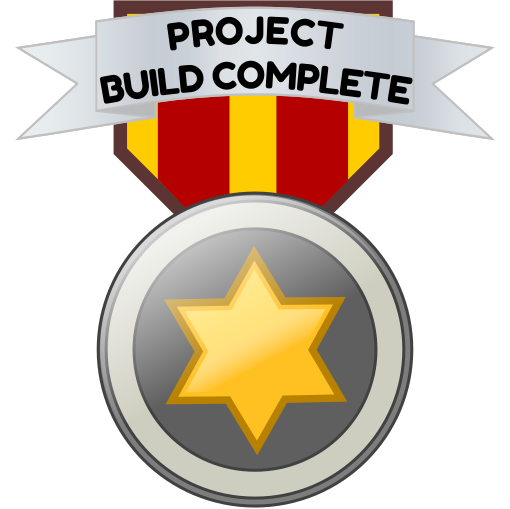
Enter a nickname | |













Author: Jared Henley
Copyright: © State of NSW (Department of Education) 2024 
Except as otherwise noted, all material in this website is licensed under a Creative Commons Share Alike Licence (CC-BY-SA).
Credits for material from third parties
Built with 0cms.
Last built: 2024-02-26 20:48:32.101693
Last modified: 2024-02-11 20:34:22.531016